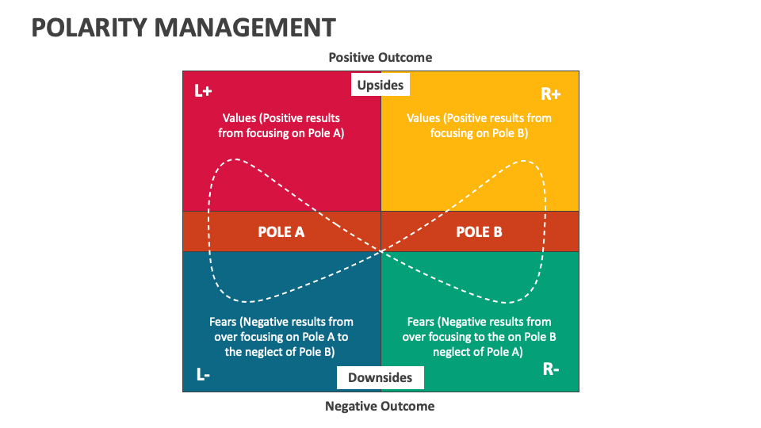

11. Polarity Management
Polarity management is an approach to achieving a productive balance between opposing values, or concerns.
The approach was originally devised and named by Barry Johnson, who began teaching and applying it in 1975.
The seminal book on the subject is Polarity Management: Identifying and Managing Unsolvable Problems, by Johnson.
The key tool used in this approach is the Polarity Map®, as loosely depicted in the diagram above.
Polarity Map® is a registered trademark of Barry Johnson & Polarity Partnerships, LLC.
One of the classic polarities, in a business context, is centralization vs. decentralization of decision-making.
Both “poles” have advantages and disadvantages.
If the balance has swung too far in one direction, perhaps in the direction of decentalization, then the answer to all of your problems may appear to be centralization and standardization.
On the other hand, if an organization allows itself to become too centralized, then lower-level managers may lack the freedom to respond productively to local situations.
So the best approach is to recognize and embrace the polarity, constantly looking for ways to maximize the upsides and minimize the downsides.
For Further Information
The Systems Thinking Alliance has a good piece on the subject.
Referenced In:
Next: 12. Self-Determination Theory